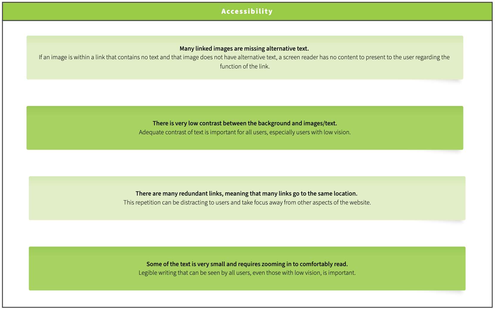

about me. üêã
My name is Lorem and I'm a graduate student interested in full-stack software engineering, UX/UI design and computer graphics.
Outside of CS, I love surfing, watching sunsets from my surfboard and spending time at the beach with my dogs.
projects.
Typeically 
Spring 2022 • Stack: Java, JavaScript, React, SQL
Typeically is a web-based typing app that allows you to find your favorite songs and type along to the lyrics! I created & developed this app alongside four classmates for my Spring 2022 Software Engineering course.
Context/Problem
This project aims to provide entertainment in the form of a typing game that allows you to type along to user selected lyrics. There is currently no application that allows users to type along to lyrics of a song that they inputted, and so our project aims to fulfill the want for such an application.
User Research
The intended users of this project know how to type and probably enjoy doing typing games/tests, as well as enjoy music. Avid typists who also enjoy music would enjoy a typing application that allows them to search and type along to their favorite songs. This app is for personal and recreational use, and the amount of time it is used depends on the user’s commitment and amount of free time.
Demos
The following demos below showcase the app’s main features.
Demo 1:
You can use the search bar to find a song by artist, song name, or lyric content, and hit 'enter' to generate song options. Once you've found the result for the song you wish to type to, click on it and you'll be directed to the typing page. Upon finishing the song, you will receive your typing stats, including words per minute, accuracy and typing duration. You will have the option to submit your score to that song's specific leaderboard! You've got to be quick—only the top 5 completion times are displayed on the leaderboard!

above: A user searches for a song and types to it, and their typing statistics and place in the leaderboard appear at the end.
Demo 2:
You can also choose a song from the list of new releases. In addition, you can toggle the song length and censorship of explicit lyrics using the switches at the top-right of the screen. Return back to the song search page by clicking the Typeically header at the top left of the page.
above: A user toggles the shorten and censor options in the top-right corner and chooses a newly released song.
Design Iterations
The backend was developed using Java and fulfilled two main purposes: (1) retrieving the Spotify API data to load a list of newly released songs on the frontend and (2) storing the submissions to the leaderboard in an SQL file. I developed API Handlers to update the frontend with both forms of data.
A new table in the SQL database file is created for each song and is continuously updated with the user’s submissions. Only the 5 top submissions are displayed on the Frontend. The frontend communicates with the backend so that the tables in the database are up to date. On the frontend side of the app, the search bar feature was implemented using the Genius API, which provided us with search query results, song lyrics and song artwork.
There are some trade-offs with the design choices made: if the APIs break, then the application will no longer functional. However, it is not feasible to hold all this information in the backend. In addition, song information needs to be continuously updated with new data.
Testing
The backend was tested with JUnit tests that targeted the API Handlers. The frontend was tested using Selenium to verify that all features of the app work in conjunction.
Conclusion
I learned a lot about the software engineering cycle in general and realized how much I enjoyed working with both frontend and backend concurrently.
üêü üêã ü¶à
Responsive Redesign 
Fall 2022 • Stack: Javascript (Figma)
I redesigned the website for the Maine Historical Society in order to present a cleaner, more concise and accessible alternative.
Context/Problem
I chose to redesign the Maine Historical Society’s website as I have always been frustrated with many aspects of the front webpage. I have friends from Maine and have always been interested in learning more about the state's history. However, the website’s design makes it difficult to access important resources needed to learn more about Maine’s history and the MHS. I am eager to propose a sleek, simple, and improved redesign.
User Research
Before creating low and high fidelity models and redesigning the website, I identified the main user problems that can arise when using it. I chose these user problems based on my major frustrations with the website as a frequent user of it. I also used WebAIM WAVE to identify any accessibility problems. The figures below present the main user and accessibility problems.

above: Showing the user problems.
above: Showing the accessibility issues.
Design Iterations
To start planning for making the website responsive, I created low fidelity designs for three screens (laptop, mobile & tablet) using Balsamiq. The low-fi sketches for mobile are shown below.
above: Showing the low-fi sketch for laptops.
I decided to reduce the number of links and information displayed on the front-page. The trade-off has to do with the risk of possibly removing important information. However, I believe this change is for the best as the large number of links makes it difficult to find resources on the website. By reducing the repetition of links and opting for a simpler design, I make it easier for users to find what they are looking for. The low-fi sketch for laptops is shown below along with annotations explaining the choices I made.
Based on the low-fi designs, I created the high-fidelity prototypes on Figma, one for each device type. The original website was redesigned using these figma prototypes. Here is the link to the redesigned website.
Conclusion
This project made me appreciate Balsamiq and Figma a lot more as I realized that both tools make it much easier to make nicely designed websites. I did not have to worry about design choices when I was coding as I had my Figma designs as reference. Hence, I was able to focus on using “flex” to make my design responsive. I learned how to make a website responsive as I code it part by part.
üêü üêã ü¶à
Development App
Fall 2022 • Stack: JavaScript, React
I developed an interactive interface for a Baklava Shop using JavaScript (React) to allows users to select sweets sold in the shop and add them to their cart.
Context/Problem
Aleppo’s Sweets, an authentic Syrian Bakery and Café based in Providence, RI, has 12+ delicious baklava items. The sheer number of options can be intimidating to customers who have not tried baklava before. To make it easier for customers to choose baklava items off the menu, I developed an interactive interface that allows users to filter the options based on relevant categories and sort them based on price.
Research
Aleppo’s Sweets’ website does not allow users to filter or sort their baklava items. As an avid baklava lover, I know exactly which baklava I prefer. However, many of my friends have never tried it before and struggle to choose one when asked to. They would appreciate a more sophisticated interface that would allow them to promptly choose one of the many items on the menu.
When taking a close look at the menu, I realized that the biggest factor that differentiated the items from each other was the main ingredient used. For example, customers who love pistachio will prefer to only look at the options with pistachio. I also noticed that two of the items off the menu are Vegan and that vegan customers would appreciate it if they could sort the menu to only see these options.
above: shows an example of the baklava menu on Aleppo’s Sweets’ website, in which there is no option to filter or sort items.
Design Iterations
I initiated the design process by making the list of 12 items. On the first iteration, I had a separate page for my cart. However, I decided to place the cart on the page as the list of items as it would allow users to scroll through the list while also looking at their cart. Although this design choice makes the page a bit more cluttered, I think the trade-off is worth it as the main goal of designing this interface is to make the user experience easier.
Conclusion
I was satisfied with the result in the end as it makes it easier for customers to choose items off the menu. I believe that Aleppo Sweets would benefit from implanting a similar interface on their website. I learned a lot about how to use interface components in React and tie them to an internal data state and feel more comfortable with React after this project.
üêü üêã ü¶à
Iterative Design
Fall 2022 • Stack: Figma
Alongside four classmates, I designed a webpage for a startup called "Nest Genomics," which aims to develop software for users to make personalized medical treatment plans based on their genetic testing results. We sketched multiple ideas on paper, then used Balsamiq to create a Lo-Fi mockup. Finally, we implemented our design on Figma, and received user feedback on its practicality.
Context on Nest Genomics
The Nest Genomics software will recommend imaging, specialists, and medications based on the user’s results. For example, if it detects that a user is at risk for breast cancer, it will then come up with a personalized plan specifically for the illness, including treatment. Before we started iterating on our designs, we made sure that we fully comprehended Nest Genomics’ purpose and goals, given how sensitive the information that the software works with is.
Initial Design
We started our design process by sketching in order to explore different design alternatives. Once we agreed unanimously on concrete design ideas, we implemented the Low-Fi prototype on Balsamiq. We decided on the backbone of the website, which consisted of the Sign-In/Login-In, Generate Plan and View Plan pages. We then implemented the first draft of our Hi-Fi prototype, closely following the foundation we set in the Low-Fi Prototype.
above: low-fi prototype (Balsamiq).
Research/Feedback
Before further iterating on our high fidelity model, we had the opportunity to receive feedback from fellow classmates at a Mock Crit. We jotted down this feedback and addressed the critiques in the second iteration of our design. We summarized the changes we made based on the feedback below.
above: feedback and improvements implemented in response.
Design Iterations
Although we expanded the complexity of our page by adding new pages (for Settings and Account), our prototype is now more complete and full proof. In addition, our pages do not look as simple as before as we had to cover potentially sensitive information and add extra information such as hotlines. However, these changes are worth it as they will allow the software to be more cognizant of its users’ mental health and needs. We believe that supporting the users’ needs should be prioritized over making the design as simple and “clean” as possible.
We submitted our prototype for user testing and received even more feedback, which was mostly positive. The general sentiment was that the prototype is simple enough and is very easy to navigate. This finding made us more confident about our design decisions.
above: our final hi-fi prototype (Figma).
Conclusion
This project allowed me to gain a stronger grasp of the iterative design process. My biggest takeaway is that there is no fixed roadmap for the iterative design process and that it needs to be tailored to the problem at hand that needs to be solved. Our software deals with very sensitive information and we had to be very conscious of our user needs at every step of the design process.
üêü üêã ü¶à